Cases
| Note: To access the Cases section, the user must have the PM_CASES permission assigned to their role. |
The case list is displayed on the left side of the screen in the user's Home panel. It is composed of groups of folders, which group cases based on their status. These are the cases that the current user has been designated to work on, but has not yet begun, or in the case of the Participated folder, cases that the user has already finished.
To access the case list, click on Home in the top menu. Options that interact with cases are: New case, Batch Routing, Inbox, Draft, Participated, Unassigned and Paused. This options are described in the following headings.

New Case
Users who have been assigned to work on a task after a start event can see the list of processes that contain new tasks assigned to them by clicking on New Case. These are the cases that the current user has been designated to work on, but has not yet begun.
To start a case and work on the steps (Dynaforms, input or output documents) in the first task, users must double click on the name of the process in the list of cases (which also includes the name of the first task).

Cases can also be started by selecting the process and clicking on the button. A window that displays the load progress of the first step will be shown to the user.
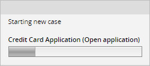
After selecting a process from the list, the Process Information window located on the right side of the sreen will display information about the process. The following information is shown: name of the process, name of the first task, description, category, the calendar related to the process, the working days (i.e. the days the process can be worked on), and the status of the debug mode.
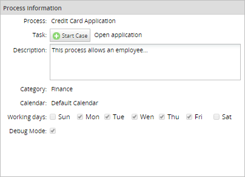
Inbox
A case is placed in the user's inbox when the current task in the case has been assigned to their account. When cases in the inbox have the "To Do" status, it means that their current task has not been completed yet. Once the data in a task is changed by submitting a Dynaform, or when another type of step is completed, then the case status will change to "Draft".
Note: Only cases on their first task may have the "Draft" status.
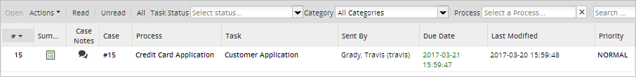
If the case is shown in boldface, then it has not yet been opened and it's considered "unread". Once the case is opened by double clicking on it (or selecting it and clicking on "Open"), then it is considered a "read" case.
Cases whose due date is listed in red have already passed the date when their current task was expected to be completed. The expected time for each task to be completed can be set in the Task Timing Control settings.
Cases are initially ordered by their # (case number), but cases can be sorted by any column by clicking on its header. To switch between ascending and descending order, click on the up or down arrow that appears after clicking on a column header, then select either Sort Ascending or Sort Descending.
Note: The column # sorts by case numbers, which are integers. Case column contains strings because custom titles can be shown or listed in the Case column. Both columns are not the same.
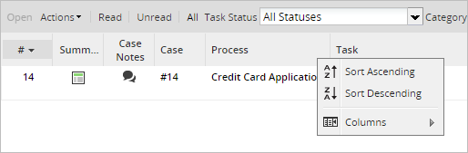
It is also possible to choose which columns are shown in the inbox list by clicking on Columns, then selecting which columns to display. Checked columns are displayed while unchecked columns are hidden.

In the menu bar above the case list and the column headers, there are a few options that allow the users to take certain actions with a case, such as pausing a case, viewing case information, filtering the cases, and others.
- Open: This option opens the case selected. A case must be selected from the list to use this option.
- Actions: Using the Actions menu allows the user to pause a selected case, view the case summary and case notes, or reassign a case by choosing the desired action from the submenu.
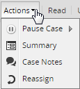
Where:
- Pause: By clicking on the pause icon, the user can pause the selected case and choose the date when the case will be unpaused on the calendar displayed.
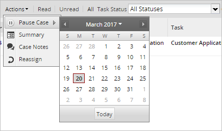
- Summary: Displays information about the selected case. Read more about the Case Summary at the link.
- Case Notes: Allows the user to add a note about a selected case. Read more about Case Notes at the link.
- Reassign: Allows the user to reassign the case to a different user. A new window will be displayed listing all of the available users:

Click on the user to be reassigned to the case, enter the reason why the case is being reassigned and then click on the Reassign button. Take into consideration that this option is only available if the user has the PM_REASSIGNCASE permission in their role or if the user is a supervisor of the process. Paused cases cannot be reassigned.
- Pause: By clicking on the pause icon, the user can pause the selected case and choose the date when the case will be unpaused on the calendar displayed.
- Read: Click to only list the cases that have already been opened (but haven't had their data changed yet).
- Unread: Click to only list the cases that have not yet been opened.
- All: Click to show all cases.
Draft
A case status changes to "draft" when the assigned user has started to work on the current task, but has not completed it. New cases on their first task automatically have "Draft" status when they are created.
Note: Only cases on their first task may have the "Draft" status.
Participated
A participated case is a case in which a user has participated, meaning that the user worked on at least one task in the case. When the user clicks on this option, the panel on the right side will show a list of cases, four buttons above the column headers and a search box, as seen in the image below:

The options are:
Note: Started by me, Completed by me and All options are filters that can be active or not.
- Open: This option displays information about the case as shown in the image below.
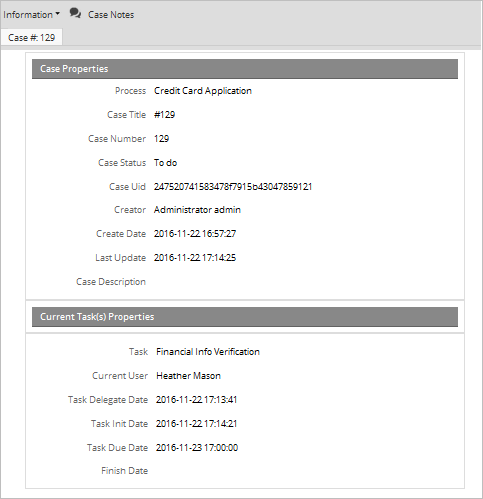
- Started by me: Only the cases started by the current user will be shown in the list.
- Completed by me: Only the cases completed by the current user will be shown in the list.
-
All: All cases the user has participated in will be listed.
A row displays in bold-style text when the user routed the case without opening it from the list using the REST API or code using a plugin or trigger. When the case has opened, the value in the field DEL_INIT_DATE is filled and the row displays in plain text.
Participated - Known Issues
Take into consideration the following known issues:
-
The "participated" cases list shows only the last task in which the user participated, not the last task of the process.
This is an example process called Salary Schedule. The first task after the starter event is "Retrieve employees information," and is assigned to the user "john Doe." The next task is a script task to assign the salary amount to each employee.
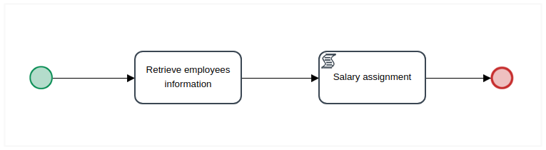After running successfully a case, the "task" field shows the last task where the user has participated. In this case, the "Retrieve employees information" is the task in which the user has participated.
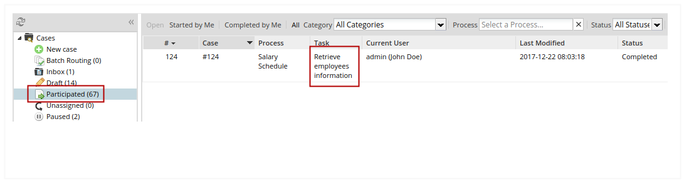 -
When the previous task is an event, Previous task property displays START-MESSAGE-EVENT value. This is because the previous task name is not a specific reference of a ProcessMaker task.
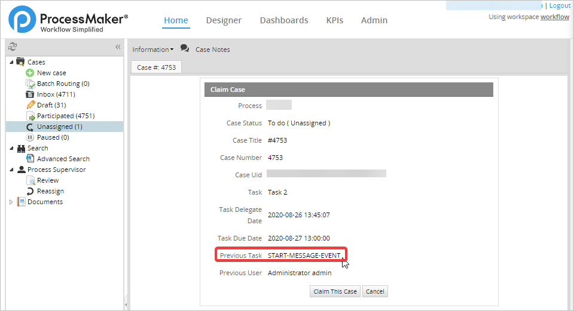
Unassigned
In an unassigned case the current task has a Self Service assignment rule, meaning that any one of the users assigned to the task can decide to claim the case as their own. Before the case is claimed its status is set to "Unassigned".

The actions that can be taken with the unassigned cases are:
-
Open: After selecting a case in the list and then clicking this option, it displays information about the case, as shown in the image below. You can also open an unassigned case by double-clicking in the case.
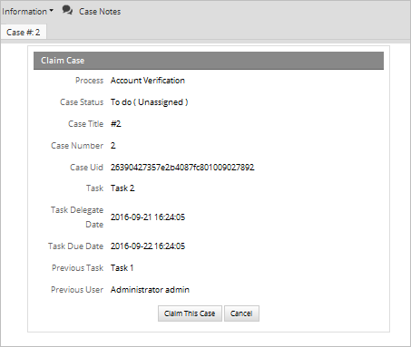
As of ProcessMaker 3.3.4, after opening an unassigned case, you can see the Dynaform summary. To see the Dynaform summary, configure your process (see Editing a Project > Dynaform to show a case summary). To see this Dynaform summary, also you need to configure the Summary Form Permission.
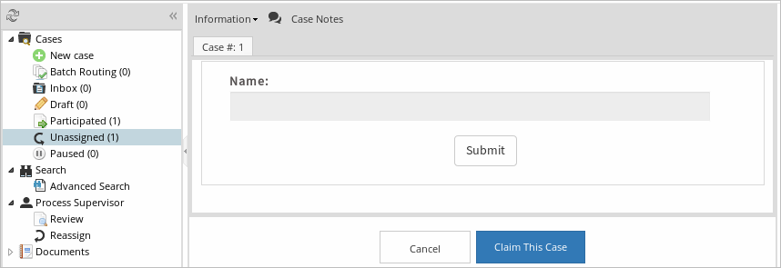
-
Read: Click this option to list only cases that have already been opened.
Warning: The Read filter in the Unassigned list does not work. As of ProcessMaker 3.2.1, this option is no longer available.
-
Unread: Click this option to list cases that have not been opened yet.
Warning: The Unread filter in the Unassigned list does not work. As of ProcessMaker 3.2.1, this option is no longer available.
-
All: Click this option to list all unassigned cases. As of ProcessMaker 3.2.1, this option is no longer available.
Highlighted Unassigned
Available Version: As of ProcessMaker 3.5.0.
Instead of displaying counters, it is possible to see the highlighted Unassigned label when there is at least one case to be claimed. Otherwise, the Unassigned label displays in a no highlighted status. To enable the highlight functionality, configure the settings highlight_home_folder_enable, highlight_home_folder_refresh_time, and highlight_home_folder_scope in the env.ini file.

Paused
A case can be paused, meaning that it is temporarily unavailable and cannot be opened or worked on. Paused cases can also be unpaused if the user currently assigned to work on the case, or a process supervisor, manually unpauses the case. Note that the cron.php file needs to be executed for a case to be automatically unpaused on its unpause date.

Filters
At the top of all the lists (Inbox, Draft, Participated, Unassigned, Paused), there are different filters:
Task Status: Filters the cases by the status, which can be:
- All Statuses: Displays all the cases.
- On Time: Displays all the cases that have not passed the date when their current task was expected to be completed. The date that the case must not passed is stored in the DEL_RISK_DATE field of the APP_DELEGATION table.
- At Risk: Displays all the cases that are at risk of being overdue. A task is at risk, if the current date has passed the value stored in the DEL_RISK_DATE field, but has not passed yet the date of the DEL_DUE_DATE field of the APP_DELEGATION table.
- Overdue Displays all the cases that have already passed the date when their current task was expected to be completed. This date is stored in the DEL_TASK_DUE_DATE field of the APP_DELEGATION table.
Warning: The Task Status option does not work in the paused list. This is a known issue that will be fixed in upcoming versions of ProcessMaker.
- Category: Search by a category created in ProcessMaker.
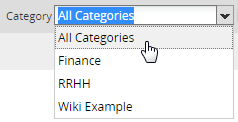
- Process: Search all processes created in the workflow using the name of a process.
- Search: Searchs a specific content in the following columns:
- #
- Case
- Process
- Task
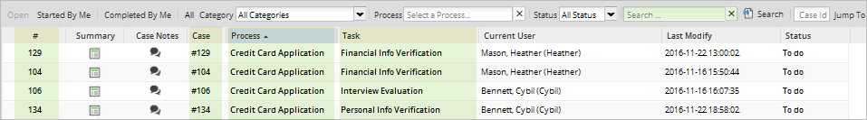
If a customized field has been added to the list, the search take into account the customized columns. Look at the next image.

The list is filtered according to the content entered.
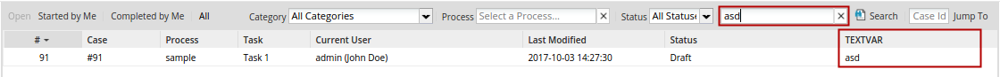 - Jump to: Redirects to a specific case if a case number is entered and the Jump To button is clicked.